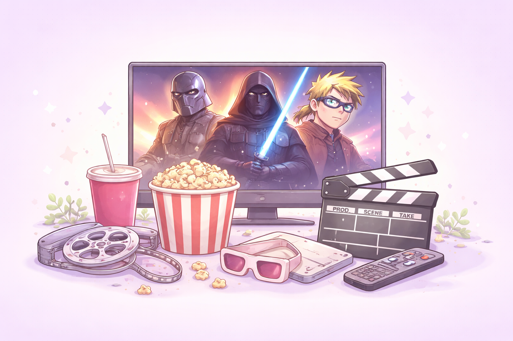

Olá, sou Maria Eduarda da Silva, natural de Curitiba, Paraná. Sou uma pessoa criativa, responsável e dedicada, qualidades que procuro aplicar tanto na minha vida pessoal quanto profissional.
Atualmente trabalho na Vivo, atuando na área de suporte técnico em telecomunicações B2B. Essa experiência tem sido fundamental para o desenvolvimento das minhas habilidades técnicas, comunicação, trabalho em equipe e resolução de problemas.
Durante a minha formação acadêmica, participei de projetos e atividades que me permitiram aplicar conhecimentos teóricos na prática, como desenvolvimento de projetos em grupo, apresentações e pesquisas. Esses momentos fortaleceram minha capacidade de organização, planejamento e aprendizado contínuo.
No meu tempo livre, gosto de ir à academia, assistir filmes, séries e animes. Também tenho grande interesse por música, leitura e viagens, pois acredito que essas experiências ampliam o conhecimento e proporcionam novas perspectivas.
Como característica pessoal, sou vegetariana, uma escolha que reflete meus valores e meu estilo de vida. Além disso, busco constantemente desenvolver habilidades novas, como aprendizado em novas tecnologias e ferramentas digitais, que considero essenciais para minha carreira futura.
Meu objetivo é crescer profissionalmente na área de tecnologia e comunicação, contribuindo com criatividade, dedicação e ética em todos os projetos em que estiver envolvida.

Imagem gerada com IA para fins ilustrativos